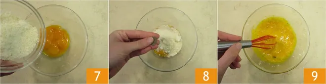

1) Per preparare gli spaghetti alla carbonara cominciate mettendo sul fuoco una pentola con l’acqua salata per cuocere la pasta. Nel frattempo eliminate la cotenna dal
guanciale e tagliatelo prima a fette (1 immagine)e poi a striscioline spesse circa 1cm.(2 e 3 immagine) La cotenna avanzata potrà essere riutilizzata per insaporire altre preparazioni.
2) Versate i pezzetti di guanciale in una padella antiaderente (4) e rosolate per circa 10 minuti a fiamma medio alta, fate attenzione a non bruciarlo altrimenti rilascerà
un aroma troppo forte. Nel frattempo tuffate gli spaghetti nell’acqua bollente (5) e cuoceteli al dente. Intanto versate i tuorli in una ciotola (6).
3) Aggiungete il Pecorino (7) e insaporite con il pepe nero (8). Amalgamate il tutto con una frusta a mano (9), sino ad ottenere una crema liscia.
4) Intanto il guanciale sarà giunto a cottura (10); spegnete il fuoco e utilizzando un mestolo prelevatelo dalla padella, lasciando il fondo di cottura all'interno della padella stessa (11).
Trasferite il guanciale in una ciotolina e tenetelo da parte. Versate una mestolata d’acqua della pasta in padella (12), insieme al grasso del guanciale.
5) Scolate la pasta al dente direttamente nel tegame con il fondo di cottura (13). Saltatela brevemente per insaporirla (14). Togliete dal fuoco e versate il composto di uova e Pecorino nel tegame.
Mescolate velocemente per amalgamare (15).

6) Per renderla ben cremosa, al bisogno, potete aggiungere poca acqua di cottura della pasta. Aggiungete il guanciale (16), mescolate un'ultima volta (17) e servite subito gli spaghetti alla carbonara
aggiungendo ancora del pecorino in superficie e un pizzico di pepe nero (18).